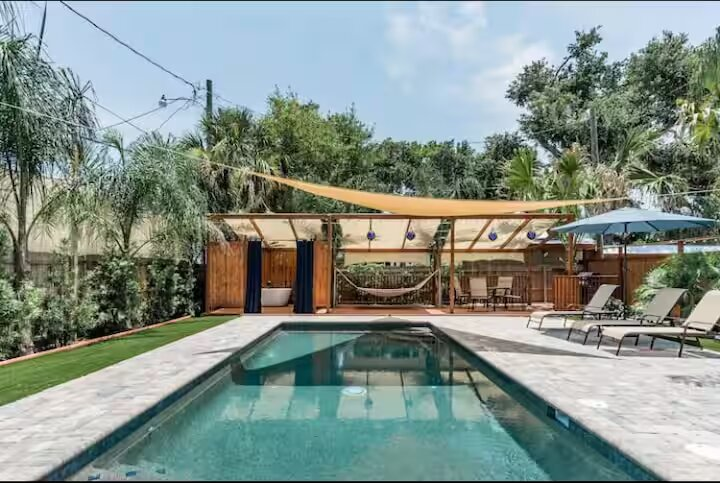
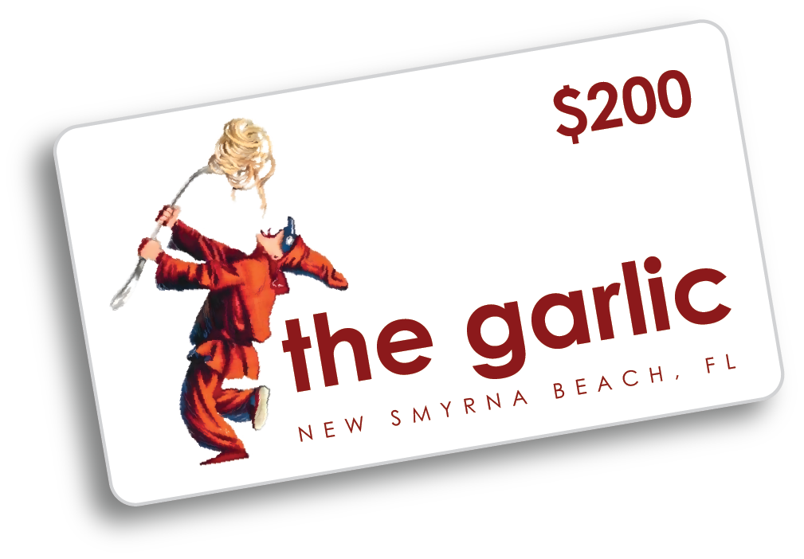
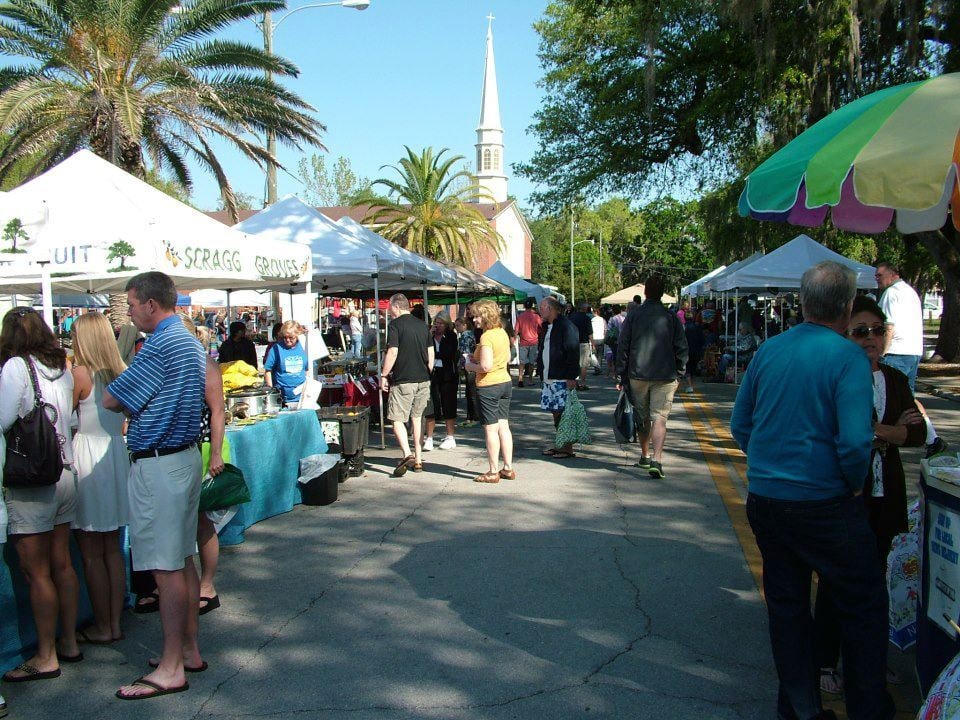
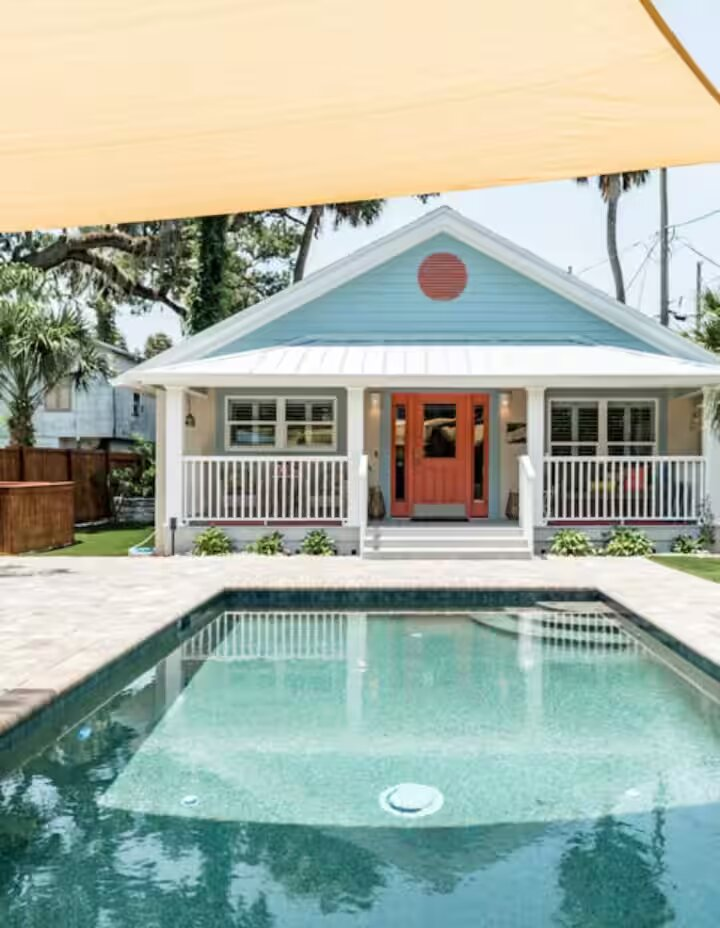
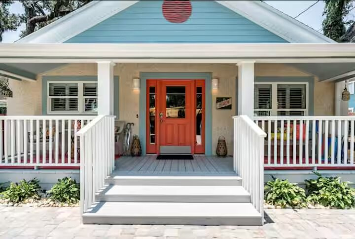
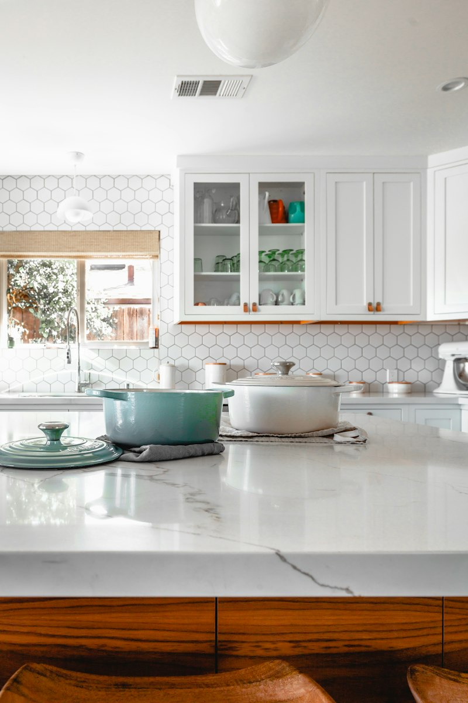
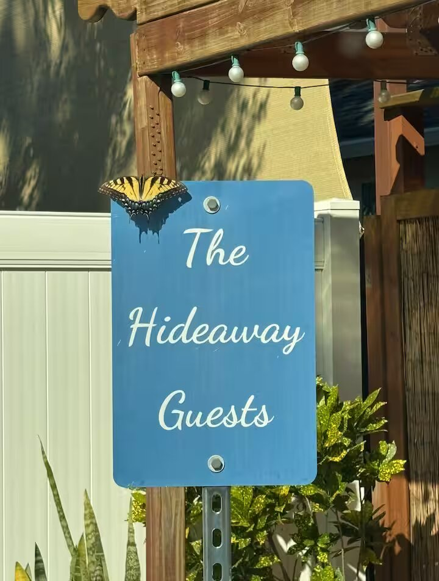
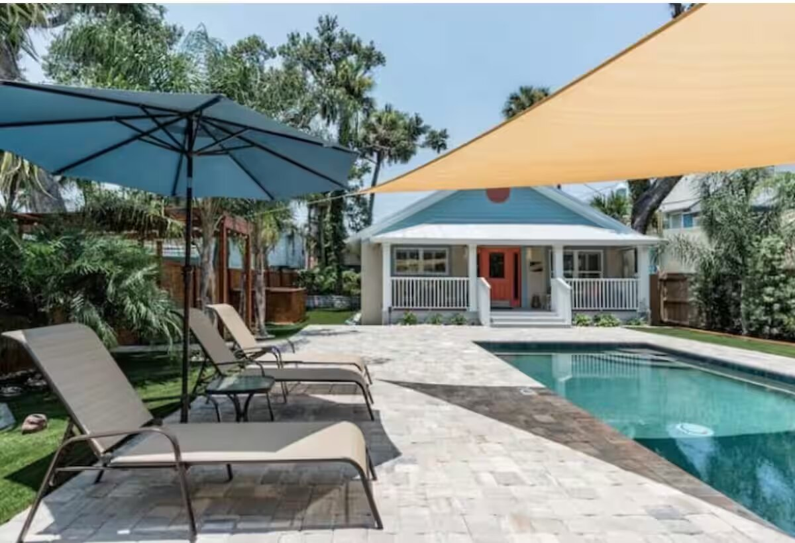

Flamingo Follies Weekend on Flagler Avenue
Free art along Flagler Avenue on November 14 and 15, then a private pool five minutes away.

Private Pool Oasis in Historic Downtown NSB
Your own saltwater pool, outdoor tub, and fire table — five minutes from the beach and steps from downtown.

5 Minutes to the Beach, Steps to Everything
Walk to restaurants and the Saturday Farmers Market, then drive five minutes to the sand.

Weekend Escape from Orlando, Lake Mary & Longwood
A true beach-town getaway roughly 45–75 minutes from Central Florida’s main corridors.

7 Nights + $200 at The Garlic
Book seven nights and receive a $200 gift card to one of New Smyrna Beach’s most loved restaurants.

What to Do in Historic Downtown NSB
Farmers Market at Old Fort Park, Flagler Avenue, RiverWalk, and classic car shows — all nearby.

Why Guests Rate The Hideaway 5 Stars
Meticulously clean, with consistent perfect scores, private outdoor living, and a location that keeps guests coming back.

Easy Drive from the Greater Orlando Area
Roughly an hour from the northern Orlando suburbs — ideal for a spontaneous weekend.

Inside The Hideaway: Bedrooms & Kitchen
Thoughtfully remodeled spaces that complement the outdoor oasis.

Holiday Season in New Smyrna Beach
A quieter coastal town atmosphere with the same private pool comfort.

First Look at the Private Oasis
Welcome to a dedicated vacation bungalow with its own saltwater pool in historic downtown.